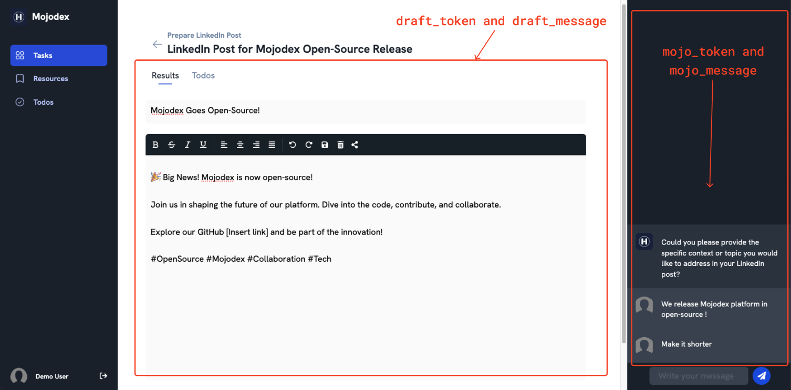

Backend
The Mojodex Backend, inspired by System 1 from cognitive science, is responsible for managing the data and implementing the business logic of the digital assistant.
Functionalities
REST API for Business Logic
Implemented with Flask, the REST API handles data management and business logic, providing fast and tailored responses to users.
backend/app/app.py
[...]
from flask import Flask
from flask_restful import Api
app = Flask(__name__)
api = Api(app)
from http_routes import *
HttpRouteManager(api)
[...]
The API routes are all defined in backend/app/http_routes.py in the HttpRouteManager class, pointing to related Flask Resources in backend/app/routes/.
Here's the link to the Backend API documentation - Swagger file.
Database Access
The Backend uses SQLAlchemy to interact with the PostgreSQL database, ensuring efficient data management and storage. It can both read and write from the database.
backend/app/app.py
[...]
from flask_sqlalchemy import SQLAlchemy
app = Flask(__name__)
app.config[
"SQLALCHEMY_DATABASE_URI"] = f"postgresql+psycopg2://{os.environ['DBUSER']}:{os.environ['DBPASS']}@{os.environ['DBHOST']}:5432/{os.environ['DBNAME']}"
db = SQLAlchemy(app)
[...]
The database models generated with SQLAcodegen can be found in mojodex_core/entities/db_base_entities.py. Those are used by the Backend to interact with the database though sqlalchemy.
Important Note: Flask-Sqlalchemy manages sessions and closes sessions on its own when a request is done. It is not necessary to manage sessions manually. However, when accessing the database in a thread that is not the main one, it does not close sessions automatically, creating locks in the database. Therefore, when requiring to access the database out of a request context, use
@with_db_sessiondefined inmojodex_core/db.pyto access, open and close a session specifically where it is needed.
Real-Time Interaction Management
Using SocketIO through flask_socketio, the Backend enables interactive sessions between the assistant and the user, ensuring instant feedback and dynamic conversation flow.
backend/app/app.py
[...]
from flask_socketio import SocketIO
server_socket = SocketIO(app, ping_timeout=40, ping_interval=15, logger=False, engineio_logger=False, cors_allowed_origins="*", )
[...]
Note that the socketio server is now only used to emit messages. Reception of user messages are done through the REST API for reliability.
Emission of Assistant Messages
To separate messages from one user to another, we use Socketio's "room" principle along with Mojodex's Session management.
A Mojodex's Session represents an interaction between the user and the assistant. It contains the list of messages exchanged during this interaction and is identified by a unique session_id.
The user can resume a Session at any moment, for example when re-opening a task from their history.
The Session's unique session_id is used to identify Socketio's room for the user and the assistant to exchange messages. In the emission code, this corresponds to the to parameter of the server_socket.emit() method.
-
Assistant partial messages, containing tokens as streamed by the LLM, are sent as soon as received through socketio dedicated events (
mojo_tokenanddraft_token). This allow to stream the assistant's response in real-time to the user so that the user can see the assistant's response being built.backend/app/models/assistant/session_controller.py -
Assistant messages, whether there are simple messages or containing task's result (produced_text) are sent through socketio using
backend/app/socketio_message_sender.pyalong with a callback. The callback must be called by the frontend to confirm the message has been received (acknowledged), if not, the assistant will send the message again every 5 seconds for 10minutes or until the message is acknowledged.[...] def send_mojo_message_with_ack(self, message, session_id, event_name='mojo_message', remaining_tries=120): [...] server_socket.emit(event_name, message, to=session_id, callback=self._mojo_message_received) def waiting_for_acknowledgment(): [...] # start a timer of 5 seconds, in 5 seconds if it has not been killed, it will resend the message. Use executor to run async if remaining_tries > 0: executor.submit(waiting_for_acknowledgment)
System 1/System 2 Abstraction
To draw a parallel with the System 1/System 2 abstraction, Mojodex's Backend functions as the digital counterpart to System 1 thinking.
It swiftly processes incoming data and orchestrates real-time interactions similar to our intuitive cognitive processes. Operating seamlessly like System 1, the Backend ensures instantaneous feedback and dynamic conversation flows, akin to rapid, non-conscious decision-making.